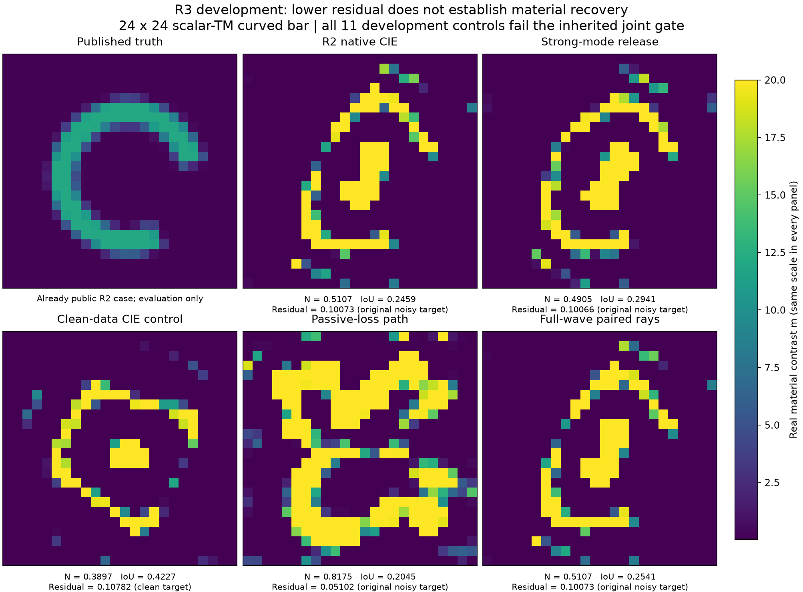
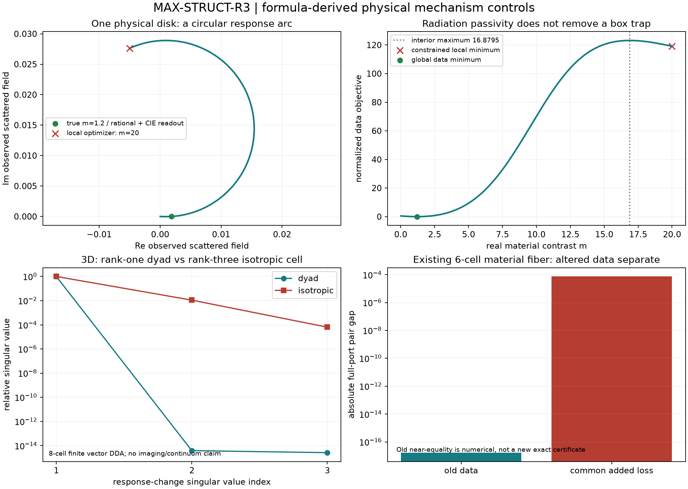

MAX-STRUCT-R3：从公式识别障碍，尚无新的成像优势
2026-11-03。本轮获得了比“CIE失败／预算不足”更具体的数学解释，但没有得到能击败成熟双β CIE的新成像算法。 研究没有在第一条路线失败时结束：先量化噪声硬锁，再作去噪和释放反事实；随后研究损耗路径与达到声明一阶容差的近似驻点；最后由完整有限响应的秩结构推出并检验无采样网格的材料路径，补上真实物理正例与三维边界。
用户中途强调“由公式结构寻找新机制，不盲目复杂化、不做左手倒右手的推导”。因此本轮把标准恒等式与新机制证据分开：Woodbury、商映射、坐标下降和人工损耗都不是原创名称；它们只有导出可被实际反例否定的预测，才进入实验。完整证明、逐轮决策、独立审查。
1. 最有用的数学认识
第一，含噪 DPCS 硬锁在真材料处也付出非零本构代价，而且可以精确计算。 对 H=P(I−mG)、D=V_r*、b=Σ_r⁻¹U_r*Y−Dj_m，最小状态误差是 b*(D H⁻¹ H⁻* D*)⁻¹b。在已公开弯条GT上，按成熟CIE的源权重合计为 .0289064，接近原CIE阶段末 .03317。按声明复Gaussian噪声求得期望 .0226618、固定材料处99%上界 .0424996；不是看到失败后任设的gate。两者来自不同材料锚点，只能比较量级，不能说噪声解释了阶段损失的某个百分比。它解释了“相对1e−3噪声不能一概忽略”，但不解释全部失败：去噪后原生CIE仍未恢复，强模态释放也未解决问题。
第二，标量TM单单元完整响应是一条 Möbius 圆弧。 所有源与接收共同写作 F(m+d e_i)=F(m)+d/(1−c_i d) U_i，其数据目标驻点由一个二次方程给出。被动 Hankel kernel 的 Hermitian 虚部为辐射Gram；由此得到 dressed Green 的正虚部和没有实 rank-one 极点的条件。无prior时，严格内部局部数据最低点就是整条合法圆弧上的最低点；错误受约束低谷仍可以在材料box边界出现。多变量耦合、prior和active constraints不能被这个一维结论删除。
第三，非线性阶数取决于材料更新的矩阵秩，而非参数数目。 rank-r路径的数据残差为至多2r次实多项式之比，其导数分子次数至多4r−2。rank1/2/3分别对应二次/六次/十次候选根问题。一个三维各向同性voxel只有一个实参数，但其材料更新是rank3；不能套用rank1的圆弧结论。这个层级直接决定了本轮能做哪些简单有限路径，以及哪些大块搜索需要新的理由。
第四，人工损耗数据不能因为 resolvent 可写就从有限旧数据免费获得。 精确 data-only 变换必须在旧观测的每条材料fiber上恒定。已有Z-ALG六材料同数据对加入同样被动损耗后出现分离，给出这一条件的实际障碍。人工损耗仍可作求解启发式，但其阶段目标并不等于真实观测的精确延拓。
上述公式在列明条件下为 PROVED_UNDER_ASSUMPTIONS/DERIVED；其工具有标准先例，具体数值主张仅为 EMPIRICAL。没有把新的写法直接宣布为新定理或成像突破。
2. 继承证据与本轮合同
R1/R2报告、理论、源码、原始数组和独立审查已分工读取；审计覆盖266个文本/代码/JSON/CSV文件、67个NPZ/373字段，并读取完整Atlas及真实FBG/A17/Z-ALG证据。历史CIE10/12、R2 native/global各2/3、profile1/3、direct0/3均保持原合同，不挪进本轮分母。继承审计。
本轮高维开发使用R2已公开的同一个弯条：24×24独立实材料、12源×48复接收、完整disk-pulse Hankel–Green resolvent、box [.02,20]、原smooth/TV prior。最终所有候选仍按同一个 Φ=.5||F(m)−Y||²/||Y||²+R(m) 选择。源和接收均在材料域外，时间约定 exp(−iωt)。GT不用于候选排序。
这是一个材料对象的11个开发控制，不是11个独立材料，也不是新盲测。clean反事实改变目标数据，单独标记。每例原噪声白化门25.1654沿用已冻结复CN模型；没有给clean数据编造Gaussian门。材料NRMSE仍除以12，IoU为预测自身Otsu，旧门不调整。Otsu的相同/近同平台存在浮点选bin敏感性，等价公式在少数端点可改变约.0084的IoU；沿用冻结实现并披露，不改门。所有材料NRMSE远大于.15，联合判断不受影响。
3. 从失败中排除了哪些解释
两单元候选利用完整2×2 Schur响应，未把两次Born更新相加。全部对交换通过预计算Gram收费后评分；它是一个明确的有限组合集合，不是大规模β或随机初值扫描。原数据prior始终保留，最优提案再由完整forward核验。全部评分、原始回执。

公开开发对象的完整负面材料证据
所有11个开发控制仍不满足原联合成像条件。它们不修改R2原来的3对象盲测结果，也不构成材料全局不可辨识定理。正确真材料在此数据下合格，而已找到的错误端点仍离噪声门很远；目前证据指向求解/可达性障碍，不能把它直接称为信息不足。
4. 一个真实物理正例：解释CIE，而非击败CIE
半径.04λ的单圆盘使用实际Hankel自项和外部源/接收；材料区间[.02,20]，公开真值1.2。自项为 .0623856+.0492194i，无实传播极点。m=20处原目标119.104、导数−2.10312；合法小步只能向左，所以局部下降法以投影梯度收敛在错误上界。中间数据最大点为16.87955。
圆弧公式的全合法候选直接得到1.2，完整forward相对残差2.71e−15。但成熟CIE的完整current读出同样得到1.2。该例把R4抽象有理边界反例推进到一个具体真实Hankel有限模型，并解释辅助current为何有时比直接物理下降更能跨过边界停滞。它不是未知图像恢复，不是新算法优越性，也不是连续圆盘PDE精度证书。

实际单元圆弧与边界停滞
5. 三维与信息边界
本轮另用R1已资格的全矢量CM+RR DDA，8个体素、3个严格横向波、6个外部xyz receiver。固定实SPD锚点，只改变一个voxel。三个dyad变化的响应差矩阵归一化奇异值为 [1,3.84e−15,2.61e−15]；各向同性变化为 [1,.0110254,6.38e−5]。后者确有额外响应方向。这个小实验支持“更新算子rank决定条件路径阶数”的适用边界；没有声称3D标量voxel总能用二次根求解，也没有3D成像优势。
信息路线复用Z-ALG非置换材料对，材料RMS差.5554，原端口差1.70e−17；同样添加i损耗后差7.42e−5。原Jacobian近核方向在新损耗下的导数9.61e−5。数值未做新outward-rounded区间认证，所以不能用近零差否定任意不连续exact变换；它支持稳定有限数据变换的障碍。没有新增真实观测用于反演。
R1的H(curl)实现缺口、单调性统一k/δ缺口仍在，但它们不阻断本轮合法scalar-TM/有限DDA问题。无NN、无ROM、无频率大扫；没有把这些NOT_RUN当作整轮任务结论。
6. 论文价值与下一步
值得保留为机制技术报告的内容是：噪声硬锁的精确材料相关代价与分布；被动rank-one圆弧给出的条件景观解释；rank-r路径阶数与3D类别区分；以及达到声明的一阶容差后多个有限物理候选家族仍失败的完整证据链。标准线性代数、坐标下降、损耗延拓和圆几何不主张首创。查新已找到CIE/NIE/CS-EB/Y0、CC-CSI、EM坐标下降及人工损耗优化先例；未穷尽检索，不能宣布全球原创。文献账本。
尚无已改善成像的方法。 人工损耗的residual改善不能保留为成像胜利；强模态释放只是标准控制；有限根和交换搜索没有救回弯条。不能把一阶驻点、全部交换无下降或浮点根残差称作全局认证。
下一步最有根据的机会来自 O C^k Q：寻找确实被源激发、被接收看见的协同材料反馈，并证明为什么一个具体较高秩方向会提供现有低秩路径没有的变化。先构造最小物理反例/正例，再写简单proposal；不能因为rank2失败就机械枚举更多block。另一条可独立推进的理论问题是把噪声硬锁下界用于有选择效应控制的材料可行性诊断，不能从GT反推阈值。
本轮已经把“失败”推进成了有公式、有反事实、有物理范围的认识；交付这一完整研究循环，不把任何单个gate或PAPER_HOLD当作完成理由。未来新鲜确认需重新生成数据，当前准备的生成模板未执行。
7. 成本与复现
每个正演、伴随、完整逆的RHS以及current/Gram/2×2求解均单独记录；没有把165600个候选说成165600次完整Maxwell解，也没有把完整逆576RHS说成免费。每个外层进程只加一次，所有历史R1/R2计算不重收费。数值总额与费用未知项见COST_LEDGER、最终账本。source/setup/online/validation/scoring范围与未计时研究开销明确分开；过程wall之和不是整轮科研历时。
所有代码、公开观测引用、封存预测、根与候选表、图像、失败记录和证明保存于本目录。第三方全文仅供本地阅读，发布包不转发。发布保留R1/R2原证据，使用既有B1仓库与网页入口。复现说明、交接。